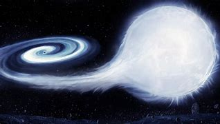

WELCOME TO SPACE TOURISM
See beyond you reach

WHAT IS SPACE TOURISM
Space tourism is an exciting development in the travel and tourism industry. A futuristic type of tourism, the prospect of being able to spend leisure time in space is a daunting concept for many. But whilst some of us may have expected only have to be able to experience space tourism using virtual reality software, several companies are turning holidays in space into a reality.
WHY SPACE TOURISM
Space tourism is a type of tourism that involves an interest in space. Whilst most people associate space tourism solely with trips to space, the concept of space tourism is, in fact, broader than this.Space tourism can include visiting space-focussed museums, watching rocket launches or travelling to destinations popular for stargazing, amongst other space related activities.